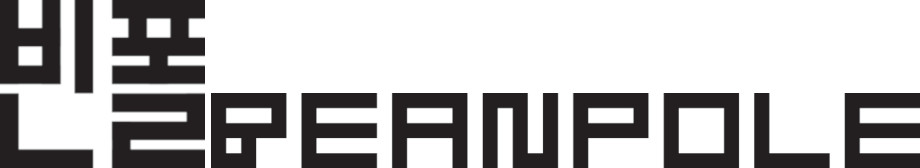

빈폴 Beanpole
제일모직이 만든 한국 프레피룩 캐주얼 브랜드
최종 업데이트

빈폴은 어떤 브랜드인가
1989년 제일모직이 미국 아이비리그풍 캐주얼 스타일을 표방하며 빈폴을 론칭했다. 당시 해외 캐주얼 브랜드가 국내 시장에 들어오기 전 국산 프리미엄 캐주얼 시장을 개척하는 것이 목표였다.
골프웨어, 아웃도어 등으로 라인을 확장하며 다품목 캐주얼 브랜드로 자리잡았다.
빈폴의 브랜드 아이덴티티는 무엇인가
국내 대기업 계열사가 해외 라이프스타일 코드(프레피룩)를 국산화해 프리미엄 캐주얼 시장을 선점한 사례로, 이후 해외 SPA·명품 브랜드의 국내 진입이 본격화된 이후에도 서브라인 다각화로 생존 전략을 취했다. 단일 캐주얼 브랜드에서 골프·아웃도어·키즈 등 서브 라인 확장을 통한 포트폴리오 다각화가 핵심 성장 축이다.
빈폴 연혁 — 주요 사건은 언제였나
빈폴 로고는 어떻게 변해왔나
자주 묻는 질문
빈폴의 브랜드 아이덴티티는 무엇인가요?
국내 대기업 계열사가 해외 라이프스타일 코드(프레피룩)를 국산화해 프리미엄 캐주얼 시장을 선점한 사례로, 이후 해외 SPA·명품 브랜드의 국내 진입이 본격화된 이후에도 서브라인 다각화로 생존 전략을 취했다.
출처와 검증
브랜드명은 한글과 원어를 함께 표기하되 데이터에 없는 표기는 만들지 않습니다. 기원 국가·설립연도는 검수된 정의문에서 확인된 값을 우선하고, 없을 때만 공식 웹사이트 URL이 일치하는 위키데이터 개체의 값을 씁니다.